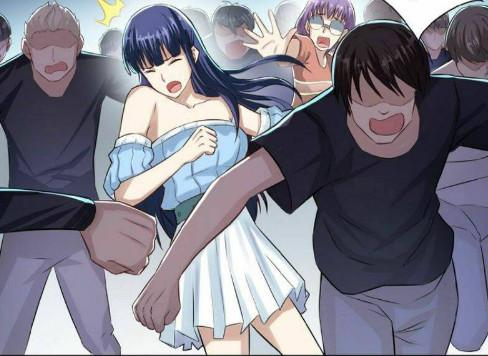

Trong phòng lạnh VIP của một quán cà phê sang trọng, Dương cầm lon tăng lực rót đầy vào ly đá rồi uống mắt luôn nhìn phía cửa trông ngóng. Lát sau một người phụ nữ xinh đẹp trên thân hình chữ S nóng bỏng là bộ váy bó đầy khêu gợi, khi cô ấy ngồi xuống, bạn có thể thấy cả bầu ngực căng tròn lộ ra đến chân núm, bên hông váy là 1 đường rẻ dài lên đến eo, lộ 1 phần mông trắng đẹp không tỳ vết. Nhẹ nhàng ngồi xuống đối diện Dương nhìn cậu bằng cặp mắt ấm áp rồi nói:
“Con đợi mẹ lâu chưa, con vừa điện là mẹ bỏ việc công ty đến đây ngay đấy”
Dương: “Dạ con cũng mới đến, mẹ uống gì, có kêu bên ngoài chưa, hay để con ra kêu cho”
Thu: “Rồi, mẹ có chọn nước rồi, hì hì…”
Dương: “Có gì mà mẹ vui thế?”
Thu: “Đi gặp con trai là mẹ vui rồi” Thu chồm lên nựng vào 2 má cậu rồi bóp nắn méo mó.
Dương: “Ái… ái… đau, con lớn rồi mà mẹ cứ thế hoài, hôm nay con có việc quan trọng cần hỏi mẹ”
Thu: “Được rồi, con gọi mẹ là mẹ biết con có việc rồi, nhưng dù sao mẹ cũng vui, việc gì… việc gì… con cần tiền hả, hay là có bạn gái rồi, hay là ai ăn hiếp con gì…”
Dương đợi cô bé nhân viên để nước lên bàn đi ra đóng cửa lại thì bắt đầu ngập ngừng nói: “Mẹ à… có phải… có phải mẹ từng giao dịch với 1 vị thần trông hơi già và quỉ dị không?”
Nghe đến đây Thu tái mặt và hoàn toàn nghiêm túc lại: “Con nói cái gì, con đã gặp tên đó à, rồi hắn có ra đề nghị gì không, con có đồng ý với hắn không?”
Dương kể lại việc tối qua gặp vị thần, nhưng cậu giữ lại bí mật của chiếc nhẫn và thế giới song song, cậu cũng nhấn mạnh là mình không đồng ý cho đến khi tên già đó giảm độ khó nhiệm vụ xuống cậu mới đồng ý. Thu nghe xong thở phào nhẹ nhõm, nhưng Thu đã biết việc đến mức này thì không thể giấu Dương nữa, cậu cũng đã trưởng thành, Thu quyết định ngồi kể lại tất cả, cho dù việc đó có thể gây ảnh hưởng xấu với Dương, nhưng cũng cho Dương rút kinh nghiệm và có con đường đúng đắn hơn mình.
Nhiều giờ trôi qua bên bàn cà phê, Dương dần hiểu được nhưng khó khăn của mẹ khi làm nhiệm vụ, và cũng hiểu vì sao bố mẹ và các cô dì chú bác mình ai cũng khác người như thế. Dương đồng cảm, dễ tha thứ hơn về cuộc hoang lạc cậu thấy hôm trước khi biết trong quá khứ: Ai ai cũng từng ngậm đắng nuốt cay và trải qua bao thăng trầm mới được ngày hôm nay, cậu nhớ dì Hương, cậu đã hiểu vì sao dì lại như vậy với mình. Bố thành, bố Minh, chú Đạt, Tuấn Lâm, dì Thảo, Lan, Quyên, Nhi… tất cả bọn họ đều là những người vào sinh ra tử cùng mẹ mình.
Dương uống nốt chỗ nước đá còn lại trong ly rồi nói: “Con hiểu rồi, con sẽ suy xét mọi việc lại, và sẽ cẩn thận trong những nhiệm vụ sắp tới”
Thu: “Mẹ biết một khi nhận hệ thống thì sẽ không thể nào dừng lại cho đến khi con hoàn thành tất cả, cho nên trước mắt mẹ sẽ hỗ trợ con, đợi thời điểm thích hợp mẹ sẽ nói với bố và tất cả mọi người hỗ trợ con, chắc chắn sẽ đơn giản hơn của mẹ rất nhiều. Nhưng, quan trọng nhất là con có bạn gái chưa?”
Dương: “Dạ con có rồi, dì Hương cũng biết bạn ấy”
Thu: “Bạn con tên gì? Con yêu bạn đó nhiều chứ?”
Dương: “Dạ tên My, con yêu My, sao mẹ lại hỏi thế?”
Thu: “Con hãy nhớ và khắc ghi điều này, nếu con đã chọn cô ấy, hãy yêu thương, chăm sóc bảo vệ cô ấy. Cho dù sau này con gặp nhiều cô gái khác, đẹp hơn, tốt hơn, cũng hãy nhớ cô ấy là quan trọng nhất, cô gái đó sẽ là ngọn hải đăng soi sáng cho con mỗi khi con rơi vào giông bão không tìm ra lối thoát. Là phao cứu sinh đáng tin nhất trong trò chơi của hệ thống này”
Dương chưa thấm lắm nhưng vẫn đồng ý với mẹ: “Dạ con biết rồi”
Thu: “Vậy nhiệm vụ đầu tiên của con là gì, nói mẹ nghe xem nó đúng đơn giản không?”
Dương: “Dạ là ôm người khác giới trong vòng 1 phút, phần thưởng 0, 1 điểm nhanh nhẹn, vv…”
Thu ngẩn người thắc mắc: “Uhm… đúng là đơn giản thật, nhưng tại sao phần thưởng điểm nhanh nhẹn gì đó, mẹ chưa từng biết cái đó”
Dương đành giải thích tiếp 1 chập nữa cho mẹ cậu hiểu nó như 1 hệ thống điểm trạng thái cơ thể, và cậu nhận phần thưởng này vì thâm tâm cậu khao khát sức mạnh và muốn trở thành anh hùng giúp mọi người, chứ không phải là tiền bạc và địa vị. Thu nghe giải thích xong lại càng vui, cô nhận ra con mình đã trưởng thành rất nhiều và có lối sống hoàn toàn tốt hơn cô rất nhiều.
Thu: “Vậy mọi chuyện càng đơn giản hơn nhiều rồi, mấy cái nhiệm vụ mà có làm khó con, cứ bảo mẹ, mẹ giải quyết được tất, còn bây giờ, lại đây, mẹ ôm 1 phút nè”
Dương hiểu lại gần ôm mẹ, đã rất lâu rồi cậu không có cảm giác này, ấm áp, an toàn, hạnh phúc trong tình yêu thương. Một phút chầm chậm trôi qua…
Thu: “Sao rồi, con nhận thưởng đi, kỹ năng gì cho mẹ xem nè, có thấy thay đổi gì trong người không?”
Dương: “Dạ nhận lúc nảy đang ôm mẹ rồi hiii, không cảm thấy thay dổi nhiều lắm, có lẽ do quá ít, nhưng mà kỹ năng con kích hoạt cho mẹ xem nè”
Dương tay thoăn thoắt như ảo thuật, đúng là sử dụng kỹ năng thì tốc độ toàn thân cậu đã tăng lên gấp đôi. Thu vui vẻ ngồi xem các trò của con.
Dương: “À mẹ, có nhiệm vụ mới này, nhiệm vụ là nhìn ngực người khác giới 1 phút”
Thu kí đầu Dương 1 phát đau điến: “Tào lao, mẹ dễ lừa lắm à, gian manh, sao lại nghĩ ra cái trò đó thế”
Dương cười hì hì đáp: “Đâu phải con chưa thấy đâu, tại mẹ đẹp, có lẽ ngực mẹ đẹp nhất trong các phụ nữ con từng gặp qua hệ thống, nên con tò mò muốn nhìn rõ nó thôi mà ^^”
Thu: “Quên trò đó đi, lưu manh, thôi cùng mẹ về ăn cơm nhé, để mẹ điện bố con nữa”
Dương: “Thôi, hôm nay con muốn biết về hệ thống và làm rõ mọi việc thôi, hôm khác con qua ăn cơm, mẹ bận việc về trước đi”
Thu: “Uhm, vậy mẹ đi đây, nhớ thường xuyên về nhà, bố mong con lắm đấy, cần gì thì điện mẹ”
Bóng Thu khuất dần, ” ting” Dương nhận được 1 tin nhắn hình từ mẹ, Dương tò mò mở ra trên màn hình là 1 cặp đào to tròn hồng hào săn chắc, chiếc núm xinh xắn. Dương ” đẹp quá, chắc chắn là ngực của mẹ rồi, mà sao mẹ chụp có phần ngực thế này… phải chụp cả mặt mới kích thích chứ… haizz”. Dương thích thú lưu tấm ảnh vào bộ sưu tập rồi đứng dậy hít thở, lấy tinh thần đi về phòng trọ.

Trong phòng trọ nhỏ, Dương trên vai vác chiếc ba lô tay cầm cây nỏ, nhìn vào gương 1 lượt, “có lẽ ổn, bộ đồ đã chỉnh sửa vừa và gọn, lên đường thôi”.
Dương: Al, đưa tao vào thế giới song song.
Al: Tuân lệnh.
Không gian cạnh Dương lần nữa bị xe toạc ra đưa cậu vào thế giới đó. Dương nhẹ nhàng giữ trọng tâm chân hơi chùn xuống chứ không ngã nhào nữa. Dương đã trở lại trong phòng học nơi hôm trước cậu thoát ra. Dương rút 1 mũi tên từ túi tên đeo sau lưng, lắp vào cây nỏ rồi dần tiến ra cửa lớp nép sát vào tường quan sát ra ngoài. Dãy hành lang dài trên lầu cậu đang đứng không có ai, Dương hạ thấp người đến sát lan can nhìn xuống sân trường. Bên dưới cậu chưa thấy con Zombie nào cả, nhưng khung cảnh cũng khá hỗn loạn, từ xa cậu có thể thấy My đi cùng các bạn được cô và các thầy đưa vào nhà thi đấu của trường.

Mục tiêu vạch ra của Dương là cứu My đầu tiên rồi đưa đi, nhưng vẫn chưa xuất hiên Zombie, mọi người chỉ đang di tản đến nơi an toàn, My ở thế giới này lại không thân với cậu, nên thay đổi kế hoạch ban đầu, cậu cần về nhà đón bố mẹ rồi đưa đến căn nhà lớn mẹ đang ở trong thế giới cậu, có thể nó ở thế giới này nó thuộc về chủ nhân khác, nhưng nó có tường cao, nhiều hệ thống an toàn, nhiều căn phòng bí mật, hệ thống điện mặt trời, hoàn toàn thích hợp để cậu lập căn cứ trong đây. Dương thấy tuy hơi loạn nhưng chưa có Zombie nên cậu cất nỏ vào nhẫn, vận kỹ năng [Nhanh Nhẹn] rồi vừa quan sát vừa đi nhanh xuống lấy xe đạp chạy về, cậu không thể bị động ở đây trong khu an toàn với mọi người được. Trên đường về nhà là người đi lại loạn xạ, nhiều chỗ còn tranh cướp lương thực trong siêu thị và các cửa hàng. Dương đạp nhanh vào trong cổng nhà rồi chậm lại đi vào, Dương thấy mẹ cậu đang nằm dưới sàn vội lao lại xem xét, mẹ cậu bị cắn, trên người đang dần biến đổi, từng đường gân nổi lên, đôi mắt đục, các khớp bỗng chuyển động răn rắc. Dương đã quá rõ việc mình phải làm tiếp theo, nhưng cậu đang rất xúc động, cậu đã ở đây 7 ngày với họ, tuy chỉ là bố mẹ 7 ngày, nhưng cậu cũng có ít tình cảm với họ. Dương gạt nước mắt lấy nỏ ra chỉ thẳng vào đầu rồi bóp cò. Đang rút mũi tên ra lau thì:
“Grừ… grừ…”
Tiếng gầm gừ đang đến gần, Dương kịp hiểu đây là nguyên nhân cái chết của mẹ cậu, Dương lắp tên vào nỏ phóng tót lên bàn ăn ngồi giương nỏ thủ thế bên trong là con chó cỏ nhà cậu nuôi, chắc nó đã bị nhiễm bên ngoài và theo thói quen về đây vô tình hại gia đình cậu. Dương nhắm chuẩn rồi bắn vào sọ con chó ấy, mũi tên lao đi nhưng chỉ trúng vào phần cổ, con chó quay qua xông về phía Dương, cậu né cú táp đó đổi nỏ sang kiếm mà không để ý sau lưng cậu là bố đã bị nhiễm lù lù ôm lấy định cắn. Dương giãy mạnh, lách ra loạn choạn làm chiếc bàn cậu đang đứng lật xuống rơi luôn thanh kiếm trên tay. Dương: “Quái, con chó nhanh thế, bố thì mạnh nữa, mới lần đầu tiên mà gặp 2 đối thủ thế này”
Dương chưa kịp suy nghĩ nhiều thì con chó đã tiếp tục lao vào, cậu chụp luôn chiếc ghế bên cạnh tán mạnh vào đầu con chó, rồi xoay người đập liên tiếp cái ghế đó vô đầu bố. Bố vẫn lao vào đè Dương xuống, dương 1 tay giữ ghế, 1 tay lấy con dao trong nhẫn ra đâm mạnh vào mắt, một lần nữa rút cây nỏ ra bắn vào đầu con chó đang chồm đến, con chó đổ gục ngay cạnh cậu. Dương xô cái xác Zombie của bố qua 1 bên bò dậy thở hổn hển.
Dương đã không ổn, tinh thần bị kích động, mới cuộc chạm trán đầu tiên thì đã phải vất vả, còn là chính gia đình mình, cậu khó chịu, bực tức nghĩ mình bị chơi xỏ. Dương không biết bên ngoài việc biến đổi lây lan của Virut đang tăng nhanh chóng mặt, họ đuổi rượt cắn xe nhau, người chạy xô đẩy đạp lên nhau để tìm sự sống, việc nguy hiểm nhất khi đại dịch xảy ra là nhưng con người đó chưa chấp nhận, vẫn bảo vệ và tin tưởng người nhà của mình để rồi bị cắn xé như món ăn. Dương may mắn được chuẩn bị trước mọi thứ, và sẵn sàng trong chuyện này nên mới thoát được. Bỗng Al thông báo nhiệm vụ mới, màn hình hệ thống hiện lên:
Nhiệm vụ: Nhìn trực tiếp ngực người khác giới. Chú ý bạn phải nhìn cả thân trên từ vai xuống ngực, eo, nhìn rõ bầu ngực, núm vú mới được tính hoàn thành.
Phần thưởng: Đây là nhiệm vụ vĩnh viễn, cứ thấy ngực 1 người bạn được nhận 0, 1 điểm nhanh nhẹn và 0, 1 điểm khéo léo…
Thời gian nhiệm vụ vô hạn.
Dương: Ơ kìa nhiệm vụ này tao vừa nói đùa lúc sáng mà… má bây giờ đang trong tận thế, lấy éo đâu ngực mà nhìn, đụ má thiệt chứ, cho xem ảnh là lên điện thoại vào mạng lên điểm vù vù rồi… này lại bắt phải xem trực tiếp… haizz…
Al: Tôi chỉ thông báo nhiệm vụ đến, thời gian vô hạn mà, chúc bạn làm nhiệm vụ vui vẻ ^^
Dương đang suy nghĩ cách nào làm nhiệm vụ thì tiếng thét kêu cứu thất thanh từ nhà bên. Dương nhặt kiếm và dao lên rồi nhanh chóng phóng qua hàng rào nhà theo hướng thét. Ở nhà hàng xóm, bên trong nhà là 2 mẹ con cô hàng xóm đang vừa la hét vừa giữ chặn cửa 1 con zombie phía ngoài. Dương giơ nỏ nhắm chuẩn rồi bắn cứu họ. Hoàng hồn lại, cô hàng xóm và con gái thấy Dương là người cứu họ thì gọi cậu liên tục. Để tránh họ gọi nữa gây ồn cậu đành đi vào nhà cùng họ khóa cửa lại. Bên trong nhà hàng xóm:
Liên (cô hàng xóm): “Cảm ơn con, may quá nhờ có con cứu 2 mẹ con cô, bên nhà con thế nào rồi, con có nghe tin tức gì chưa, bên ngoài giờ Virut như bệnh dại lây lan khắp nơi, người bị nhiễm cắn xé người khác dã man, cô đã vất vả lắm mới đưa cái Loan về được nhà mà vẫn gặp 1 con ở cửa”
Dương: “Dạ nhà con bị nhiễm hết rồi, còn con thôi, con cũng vừa chạy ra khỏi nhà khi nghe tiếng cô kêu cứu”
Liên: “Cô rất tiếc, thôi đừng buồn nhà, bây giờ cứ an toàn ở trong nhà đã chờ chính quyền đến thôi”
Dương thật ra chỉ buồn đôi chút, ở thế giới này cậu mới ở có 1 tuần, Dương nghĩ đơn giản những người ở đây đều là được chiếc nhẫn tạo ra nên cậu cũng không cần phải đau khổ lắm: “Dạ con không sao đâu, nhà cô chỉ có cô và chị Loan à, chồng cô đâu”
Liên: “Chồng cô trước đó đi kiếm thực phẩm dự trữ, đến giờ vẫn chưa có tin tức gì, điện thoại mất sóng hết rồi, mà con lấy vũ khí ở đâu thế?”
Dương: “À cây nỏ nà hả, con trước thích săn bắn nên sưu tầm thôi, không ngờ bây giờ lại hữu dụng, cô và Loan ở đây đi, con qua nhà lấy ít thực phẩm đem qua cho rồi con đi, con cũng không cần nhiều”
Liên: “Sao con lại đi, đi đâu bây giờ chứ, con muốn tìm ai, con cứ ở đây đi, khi nào an toàn hãy tìm người thân sau, giờ bên ngoài loạn lắm” Thực chất Liên giữ Dương lại là vì cậu là đàn ông duy nhất ở đây, lại có vũ khí, có thể bảo vệ an toàn cho họ.
Dương nhảy số rất nhanh, nhìn ngắm Liên và Loan 1 lượt cười nham hiểm (ở thế giới này mình cũng chả cần câu nệ nhân phẩm nhỉ, mà căn bản đại dịch Zombie đã bắt đầu chả ở đâu là an toàn 100%, mình cứu họ rồi thì mượn họ làm nhiệm vụ coi như trả công, chắc không mất mát gì đâu) nghĩ xong Dương cầm chắc nỏ trong tay chuẩn bị tư thế phòng bất trắc rồi lên tiếng luôn:
“Tôi xin lỗi, nhưng dì Liên và Loan cởi áo ra đi”
Liên bất ngờ pha lẫn ngỡ ngàng với câu nói của cậu nhóc tay che lên ngực đứng chắn cô con gái lại: “Cậu định làm gì, đại dịch mới xảy ra còn loạn lạc, vài hôm nữa quân đội dẹp loạn, còn có pháp luật còn có chính phủ, cậu đừng làm càn”
Dương hơi giơ nỏ lên hăm dọa: “Này, tôi mới vừa cứu 2 mẹ con cô đó, không có tôi 2 mẹ con cô thành cái xác không hồn như lũ kia rồi, tôi chỉ xem ngực 1 chút chứ có làm gì đâu, tò mò thôi.”
Liên sợ sệt suy nghĩ một lúc: “Được rồi, tôi cho cậu xem, nhưng cái Loan thì không, cậu phải hứa tha cho chúng tôi”
Nếu họ không làm Dương cũng không bắn họ mà chuồn đi thôi, nhưng không ngờ họ đã đồng ý nên diễn thì diễn cho tới, cậu giương nõ lên: “Cả 2, nhanh đi cởi hết áo ra, tôi đổi ý bây giờ”
Liên và Loan đành miễn cưỡng cởi áo ra cho Dương xem ngực. Vú Liên to, hơi xệ, núm vú to nhưng bầu ngực vẫn rất trắng, cơ thể vai eo cũng khá gọn gàng so với phụ nữ 1 con, còn Loan là cô gái 19 đôi mươi, vú săn chắc cũng tròn trịa và trắng trẻo không tì vết. Dương nhận được thông báo cộng 0. 2 Điểm nhanh nhẹn và khéo léo xong thì gãi đầu nói:
“Được rồi, 2 người mặc áo vào đi, tò mò xem tí thôi làm gì căng, đợi tí, tôi về bên nhà lấy lương thực cho”
Dương vừa đi ra, mẹ con Liên lật đật đóng cửa khóa chốt định rằng không cho ai vào nữa kể cả Dương. Lát sau họ bất ngờ khi Dương quay lại với bao gạo và bọc đồ ăn trên tay. Suy tính lúc lâu họ đành mở cửa vì căn bản nếu không có số gạo đó họ cũng không sống sót được trong nhiều ngày tới. Lúc này trời đã sập tối, cả khu vực mất điện nên càng tối nhanh hơn, Dương cùng 2 mẹ con họ khóa cửa nẻo, đóng gỗ chặn cửa sổ làm đại vài món ăn nhanh rồi đi ngủ. Liên và Loan đều lo lắng về đại dịch và sắp tới họ phải sống thế nào, thêm phần sợ vì Dương đang trong nhà, đến khi quá sợ và mệt mỏi họ mới ngủ thiếp đi được 1 lúc. Trời sáng Dương ăn thêm 1 bữa với họ rồi đi ra bảo họ đóng cửa cẩn thận, cậu sẽ không quay lại. Qua cả đêm an toàn Liên cảm thấy con người Dương cũng được, có lẽ do tuổi trẻ nông nổi và tò mò mới có hành động vô lý hôm qua thôi chứ cũng không làm hại họ, giờ cậu đi rồi trong nhà sẽ không còn ai bảo vệ họ, cô thầm chúc Dương đi may mắn và mong chồng mình an toàn trở về với mẹ con cô.
Đêm qua Dương đã suy nghĩ rất nhìu về tình trạng hiện giờ, cậu phải mau chóng tìm nơi tốt trú ẩn để làm chỗ về và quay lại an toàn, còn đám bạn, thầy cô còn cả My không biết họ có an toàn không. Bỏ đi, tất cả đều không phải người thân ở thế giới của mình, ở đây tất cả đều là xa lạ. Dương về nhà gôm thêm ít đồ ăn thì lại không đành lòng mà đi. Dương đành lấy chiếc xẻng quân dụng ra sau vườn đào 1 cái hố, cậu đưa xác bố mẹ và con chó vào rồi chôn. Xong việc trời đã đứng nắng (haizzz nếu đốt đã không tốn sức và thời gian thế này, nhưng mà lửa lớn và mùi thịt cháy có thể dụ zombie hoặc người sống gần đây đến, a đúng rồi, quên kiểm tra thử cái xác, xem có tinh hạch, tinh thể… hay gì đó đại loại giống trên phim truyện nhỉ)
Dương vào nhà kiếm găng tay, cầm chiếc rìu bửa củi rồi nhảy qua nhà dì Liên lôi cái xác Zombie đến 1 góc khuất, Dương đeo bao tay xé 1 mảnh vải bịt ngang mũi miệng cho bớt mùi hôi rồi mổ cái xác ra kiểm tra. (Không có gì, con mợ nó, sao mình ngu thế, thế giới này chiếc nhẫn không cho mình sức mạnh hay kỹ năng gì, chứng tỏ lũ Zombie này không tiến hóa hay có vật gì hữu dụng, chắc nó như Zombie trong The Walking Dead thôi, bọn chúng đơn giản chỉ là xác sống, nguy hiểm khi chúng đông, và nếu thế thì nguy hiểm nhất là con người, không biết nữa, cứ tới đâu tính tới đó thôi, về nhà tắm đã, thối quá)
Dương tắm xong thì lấy chai rượu của bố ra rửa tay, mặt và uống ít cho mất mùi hôi và bớt cảm giác nhợn người vì mổ xác ban nảy, cầm chai rượu và ít mồi khô, cậu nhai ngấu ghiến.
“Dương… Dương… lại đây” dì Liên đang ở cạnh hàng rào gọi cậu.
Dương tiến đến với vẻ mặt ngạc nhiên, (hôm qua chưa đủ sợ cậu hay sao còn tìm cậu): “Dạ?”
Liên: “Cảm ơn con dọn dùm cái xác trước cửa nhé, con giúp dì thêm việc nữa được không?”
Dương: “Không, mọi việc xong rồi, giờ con chuẩn bị đi đây!”
Liên: “Dì xin con đấy, con không giúp thì 2 mẹ con dì chết mất, hay… hay con muốn xem lại không, dì cho con xem”
Dương có điểm rồi đâu lấy thêm được nên từ chối: “Không, hôm qua con tò mò thôi, con xin lỗi”
Liên hết lời năn nỉ mà thằng nhóc vẫn giữ thái độ nên vì mạng sống liều nói: “Con chỉ tò mò xem ngực thôi à, dì có thể cho con xem thứ khác”
Bỗng “Ting” Al thông báo nhiệm vụ mới:
Nhiệm vụ: Bạn xem trực tiếp phần dưới cơ thể người khác giới. Chú ý: Ngắm cả phần thân dưới, chân mông, lồn phải vạch ra xem cả cái lổ bên trong mới được tính.
Phần thưởng: Bạn nhận được 0, 1 điểm sức mạnh, 0, 1 điểm thể lực cho mỗi người bạn xem.
Thời gian nhiệm vụ không giới hạn.
Dương: Đụ má chơi tao rõ ràng quá rồi, vừa mới nghe dì Liên nói cái mày bày nhiệm vụ này ra ngay, mày nói trùng hợp nữa đi, chắc chắn ông già đó đang theo dõi tao rồi mới làm ra mấy nhiệm vụ này, còn bắt vạch ra xem bên trong nữa, má quá đáng thiệt chứ.
Al: Tôi chỉ thống báo nhiệm vụ cho bạn, tôi nào biết gì đâu ^^
Dương: Tao… tao cạn lời, mẹ có nhiệm vụ gì thì bổ sung nhanh đi nhé, đừng có chơi kiểu đấy.
Al: Hệ thống đã ghi nhận và tính toán phương thức hợp lý, sẽ có câu trả lời cho bạn trong thời gian sớm nhất. Bye…
[Ở một nơi nào đó của thế giới khác, trong căn phòng trước màn hình theo dõi, nhiều tên thần quỉ dị đang vui vẻ cười, thích thú với trò mới này.]
Lúc này, Liên thấy Dương đứng suy nghĩ hồi lâu mà không lên tiếng, cô nghĩ Dương đã thích đề nghị này nên quyết tâm hơn:
“Dì và Loan sẽ con xem tất, con giúp dì lần này nữa thôi”
Dương đang bực vì biết chắc chắn tên thần mất nết đang theo dõi mình, nhưng cậu cũng đành ngậm ngùi nhận lời dì Liên: “Dạ, dì nói đi, nếu được con sẽ làm, mà… con phải xem tất cả thật kỹ đấy”
Liên: “Được rồi, chuyện là bên nhà dì không còn nước nữa, bây giờ có lương thực mà không có nước thì cũng như không, bên nhà con hình như còn đúng không”
Dương sực nhớ cả trấn này là vùng cao, toàn bộ hệ thống nước là dùng nước từ nhà máy thủy cục bơm ra, bây giờ đại dịch dĩ nhiên sẽ không ở đâu có nước, mà nước quan trọng hơn cả thức ăn. Hèn gì dì Liên dùng cả thân thể 2 mẹ con đổi như thế. May mắn nhà Dương có lắp 1 tháp với bồn dự trữ nước, tuy không còn nhìu, nhưng đủ cho họ cầm cự.
Dương: “Dì và Loan soạn những thứ cần thiết rồi qua nhà con ở đi, bên đây nếu không tắm chỉ dùng nấu ăn và uống có lẽ cầm cự được vài tuần”
Dương vừa đứng đợi 2 người soạn đồ vừa tính lại, căn nhà trong kế hoạch cậu đi đến đúng là có hệ thống năng lượng mặt trời, có giếng và máy bơm dự phòng, nhưng đã lâu không sử dụng, nếu bơm không lên nước thì kế hoạch đổ sông đổ biển hết, không lẽ uống nước trong bể bơi, lại phải đi 1 bước tính 1 bước, khó khăn nối tiếp khó khăn. Lần sau cậu phải đem nhiều nước hơn mới được.
Hỗ trợ Liên và Loan rinh gạo, đồ ăn kèm quần áo qua nhà, Dương 1 lần nữa phải phụ họ đóng thanh chắn tất cả cửa sổ nhà, thiết lập an toàn lại nhà cậu trời ngã bóng về chiều. Dương đã mất 2 ngày ở đây, cậu khá bức bối và khó chịu.
Ăn uống xong ngồi quanh bên bàn salon, bóng tối đã bao trùm cả thị trấn nhỏ, Dương không đợi được nữa đòi dì Liên và Loan thực hiện lời hứa để cậu mau chóng làm nhiệm vụ còn đi ngủ. Trong căn phòng ngủ đã che kín không để ánh sáng lọt ra, Dương cầm chiếc điện thoại bật đèn flash lên tiện tay cậu lén bật luôn chế độ quay có cái để dành khoe đám bạn với mấy thanh niên trên telegram (^^ thương anh em trong nhóm tele đến thế là cùng)
Liên và Loan cởi hết đồ ra trước mặt Dương, Dương cầm điện thoại lại gần nhìn cho rõ. 2 cơ thể trần truồng trước mặt khiến Dương hưng phấn vô cùng, dáng người nào cũng đẹp. Dương mau chóng hối thúc.
“Mau đi, tôi hồi hộp lắm rồi”
Loan: “Hả tôi và mẹ cởi hết rồi còn gì, anh còn muốn gì nữa, đừng có quá đáng”
Dương: “Mẹ cô hứa cho xem tất cả, không phải tôi đòi nhé, quay 1 vòng chậm thôi, rồi ngồi lên giường, vạch lồn ra tôi thấy rõ cái lổ bên trong mới được”
Liên ra hiệu cho Loan nhịn đi, rồi cùng con gái ngồi cạnh mép giường dang rộng 2 chân banh ra. Dương cầm điện thoại tiến sát lại nhìn.
“Dì tự vạch ra đi, tôi không chạm vào 2 mẹ con dì đâu”
Liên đưa 2 ngón tay vào giữa khe lồn rồi banh 2 mép ra, Dương kê điện thoại sát lại cho đủ ánh sáng rồi nhìn kỹ cái mép và lổ lồn đang rỉ ra nước nhờn, cậu cười thầm vì có nhiêu đó mà dì Liên đã rỉ nước ra, độ dâm dì cũng không phải dạng vừa đâu. Quay điện thoại qua bên Loan soi, thì bên này Loan vạch mép nhỏ xinh của mình ra, nhưng chiếc lỗ vẫn bít lại. Dương cau mày, Liên đành giúp con gái, kêu Loan thả lỏng, nhắm mắt lại thở đều, Liên xoa lên hột le Loan vài cái rồi vạch mép lồn ra, dưới ánh sáng điện thoại cái lổ lồn Loan đang đóng mở theo nhịp thở của Loan, 1 dòng nước từ lồn đó chảy ra.
Loan: “Hơ… hơ… hơ… xong chưa, làm gì mà nhìn hoài vậy”

Dương đã hoàn thành nhiệm vụ 1 lúc nhận 0, 2 điểm sức mạnh và thể lực, cậu tò mò muốn nhìn thêm 1 lát thôi nên ậm ờ: “Uhm, được rồi, xem thôi có chạm vào đâu, có mất mát gì đâu làm quá”
Loan: “Cậu xem cả cơ thể người ta, còn bắt banh lồn ra cho xem mà bảo không quá đáng hả?”
Dương: “Được rồi, tôi cũng cho toàn bộ thức ăn và nước uống ở đây rồi, bây giờ những thứ này còn quan trọng hơn mạng sống, ngày mai tôi đi, được chưa”
Đang cầm điện thoại, vô tình có lại ít sóng, Dương vội kiểm tra tin nhắn và xem thông tin, đúng là ở thế giới này ngoài bố mẹ đã mất chả ai nhắn hay quan tâm cậu. Dương lướt vào vài tin tức mới nhất. Hàng loạt thông tin và những clip ngắn, cảnh loạn lạc giết nhau cướp bóc, cảnh zombie xé xác người, chính phủ đã mất kiểm soát, toàn thế giới đã bị xâm chiếm bởi Zombie. Liên và Loan cũng đang xem ké điện thoại Dương, đối với Dương chuyện này bình thường, nhưng đối với mẹ con họ là đả kích rất lớn, thế giới diệt vong, tự sinh tồn, niềm hy vọng cuối cùng còn sót lại từ chính phủ, quân đội cũng tiêu tan. Liễu ôm Loan cùng khóc nức nở, bởi chỉ vài tuần nữa hết nước và lương thực thì họ cũng chết đói hoặc là biến thành những xác sống di động. Dương cũng không biết làm sao an ủi họ nên đành dọa nạt:
“Nín đi, khóc gây tiếng động lũ Zombie kéo đến xé xác hết bây giờ, cả 2 hết ngại rồi à, lo mặc đồ vô đi ngủ đi, điện thoại tôi hết pin tắt nguồn luôn rồi”
Loan vội lục trong túi ra cục sạc dự phòng đưa Dương: “Cậu sạc đi, điện thoại cậu sóng mạnh, có khi bắt được thêm tin tức gì đó”
Dương: “Tôi có rồi, đi về phòng 2 người ngủ đi, tôi cũng phải nghỉ ngơi ngày mai đi”
Liên: “Con định đi đâu?”
Dương suy nghĩ 1 lát, nếu cậu nói ra họ sẽ đòi theo cậu, nhìn lại 1 lượt 2 người khá tội nghiệp nên cậu nói: “Tôi biết 1 chỗ khá an toàn và tiện nghi để sinh tồn”
Liên: “Thật không, bây giờ còn chỗ nào an toàn chứ, còn thức ăn, nước uống, còn có ai khác ở đó không”
Dương: “Nếu không có chỗ như vậy tôi liều đi làm gì, an toàn thì không thể bảo đảm 100% nhưng tốt hơn ở đây nhiều, thức ăn nước uống thì phải tự sinh tồn thôi, tìm trên đường, có gì lấy đó, đến đó có người không cũng không biết, đi 1 bước tính 1 bước. Còn hơn ở đây chờ chết”
Liên nhìn Loan cùng gật đầu rồi nói: “Con đưa dì và Loan đi cùng nhé, dì sẽ làm mọi thứ con yêu cầu”
Dương: “Con nói thật, con không phải ham hố chuyện đó, đi một mình đã khó khăn rồi, con không thể”
Liên: “Coi như dì cầu xin con, hay con đưa Loan đi thôi cũng được, dì xin con đấy”
Dương: “Dì đừng như thế, được rồi, mọi người về ngủ đi, sáng mai lên đường”
Liên: “Con nói thật chứ, sao lại đồng ý ngay thế, vừa nảy còn từ chối mà, đừng bỏ đi một mình nhé”
Dương: “Lúc con nói ra là con đã nghĩ sẽ phải đưa dì và Loan đi cùng rồi, con chỉ xem ý 2 người thế nào và nghĩ thêm một số việc thôi”
Thật ra Dương đang câu dẫn thêm vì cậu đang nghi ngờ ông thần đó sẽ đưa ra thêm nhiệm vụ, giữ lại được 2 người này có khi lại có ích. Có cơ hội cứ thả mồi câu cho họ nói ra trước sau này yêu cầu họ làm nhiệm vụ sẽ đơn giản hơn. Còn với họ, thì hiện tại Dương là con đường sống duy nhất, cho dù Dương có lợi dụng họ thì họ vẫn chấp nhận nó như 1 thỏa thuận ngầm đảm bảo lợi ích thỏa mãn nhu cầu đôi bên.